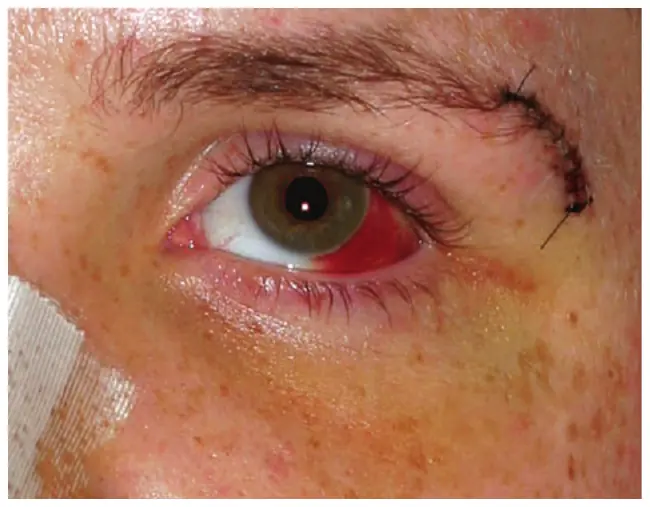
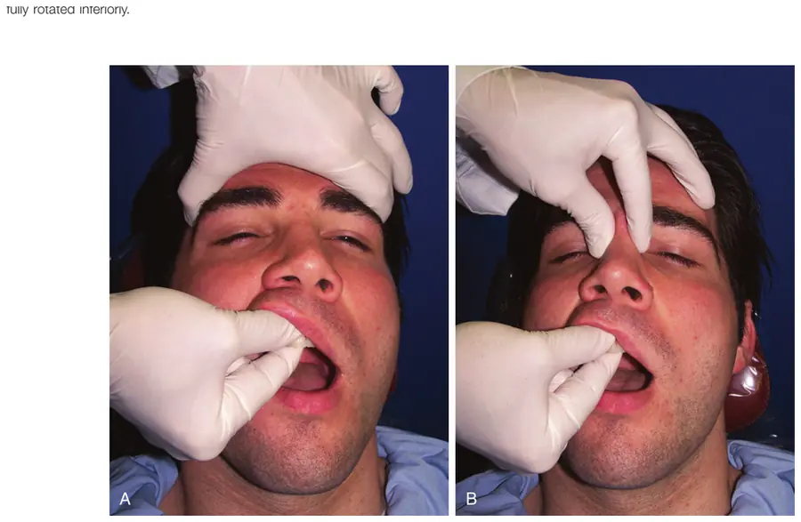

نسخه استخراجشده؛ ترجمه یا تأیید علمی انجام نشده است. وضعیت: captured
پس از پایدار شدن اولیهی بیمار، کاملترین شرححال ممکن باید گرفته شود — با یک نکتهی مهم: این شرححال باید از بیمار گرفته شود؛ ولی بهعلت از دست دادن هوشیاری یا مختل شدن وضعیت عصبی، اطلاعات اغلب باید از شاهدان یا اعضای خانوادهی همراه به دست آید.

پنج پرسش مهم:
و یک مرور کامل سیستمها هم باید گرفته شود: آلرژی، داروها، ایمنسازی پیشین کزاز، وضعیتهای پزشکی، و جراحیهای قبلی.
و یک قاعدهی ترتیبی دیگر: ارزیابی فیزیکی ساختارهای صورت باید تنها پس از یک ارزیابی فیزیکی کلی انجام شود که عملکردهای قلبی-ریوی و عصبی و سایر نواحی ترومای احتمالی از جمله قفسهی سینه، شکم، و نواحی لگنی را دربر میگیرد.
و حالا سه اکیموز که هرکدام محل مشخصی را لو میدهند:
و به یاد بیاور که در یونیت پیش خواندی: «وقتی کوفتگی رخ میدهد، باید به دنبال شکستگی استخوانی گشت» — این سه اکیموز، دقیقاً همان قاعده در عملاند.
معاینهی عصبی صورت باید ارزیابی دقیق تمام اعصاب مغزی را دربر بگیرد. بینایی، حرکات خارجچشمی، و واکنش مردمک به نور باید با دقت ارزیابی شوند.

و حالا سه یافتهی مردمکی که هرکدام خبر متفاوتی میدهند:
و ناهنجاری حرکات چشم میتواند دو معنا داشته باشد: مشکلات عصبی مرکزی (اعصاب III، IV، یا VI)، یا محدودیت مکانیکی حرکات عضلات چشم ناشی از شکستگی کمپلکس اوربیت.
و سه ارزیابی دیگر: عملکرد حرکتی عضلات صورت (عصب VII)، عضلات جونده (عصب V)، و حس ناحیهی صورت (عصب V) باید ارزیابی شوند. و هر پارگی باید با دقت تمیز و برای احتمال قطع اعصاب یا مجاری بزرگ مانند عصب فاسیال یا مجرای استنسن ارزیابی گردد.
معاینهی مندیبل — چهار گام:
و معاینهی ناحیهی میانی صورت: ارزیابی میدفیس با سنجش تحرک ماگزیلا بهعنوان ساختاری منفرد یا در ترکیب با زیگوما یا استخوانهای بینی آغاز میشود.
و تکنیک دقیقش: سر بیمار باید با فشار روی پیشانی با یک دست تثبیت شود؛ با شست و انگشت اشارهی دست دیگر، ماگزیلا گرفته میشود و فشار محکم برای فراخواندن تحرک ماگزیلا اعمال میگردد.
و بینی و کمپلکس NOE: فاصلهی بینکانتالی — میان داخلیترین نقطهی کانتوس داخلی دو طرف — را اندازه بگیر؛ بهطور طبیعی با پهنای قاعدهی بینی برابر است. آسیب NOE اغلب استخوانهای بینی را از هم باز و رباطهای کانتال داخلی را جابهجا میکند، و نتیجهاش تلکانتوس تروماتیک یعنی گشاد شدن فاصلهی بینکانتالی است.